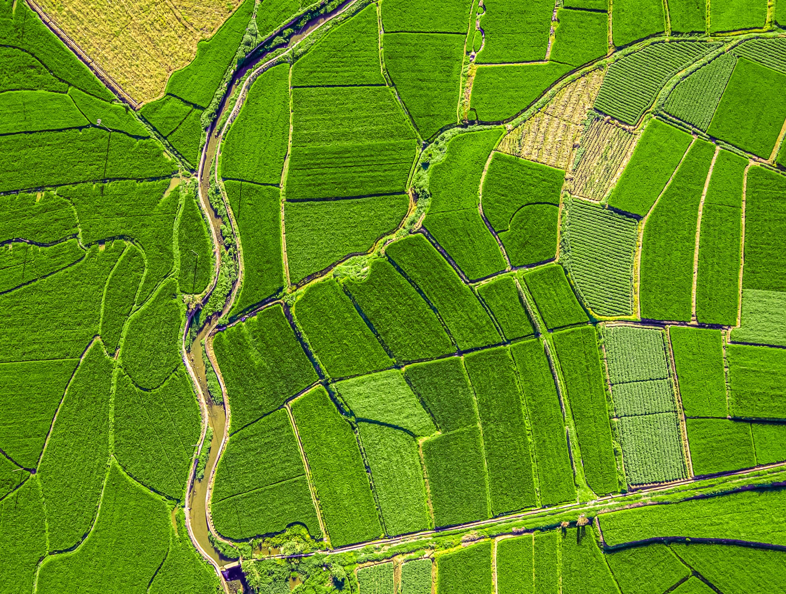
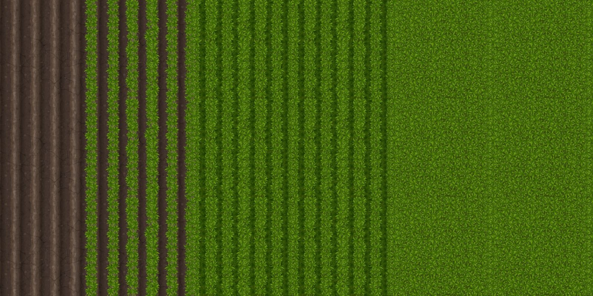
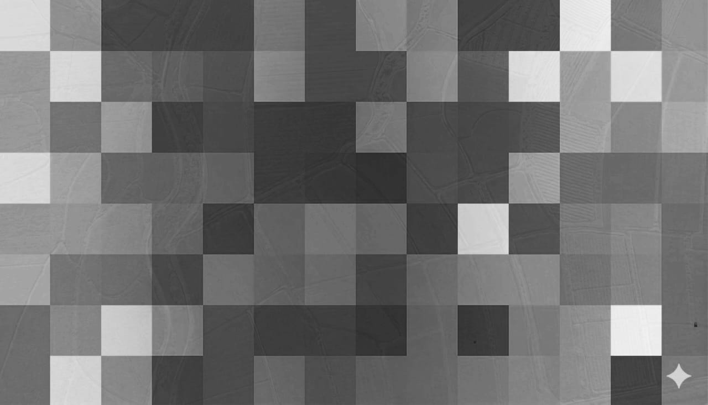
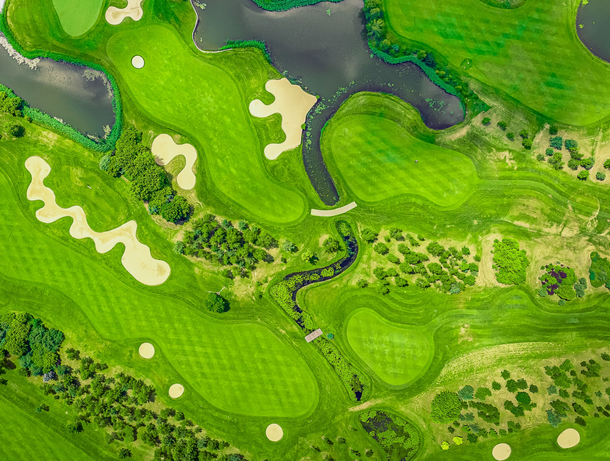
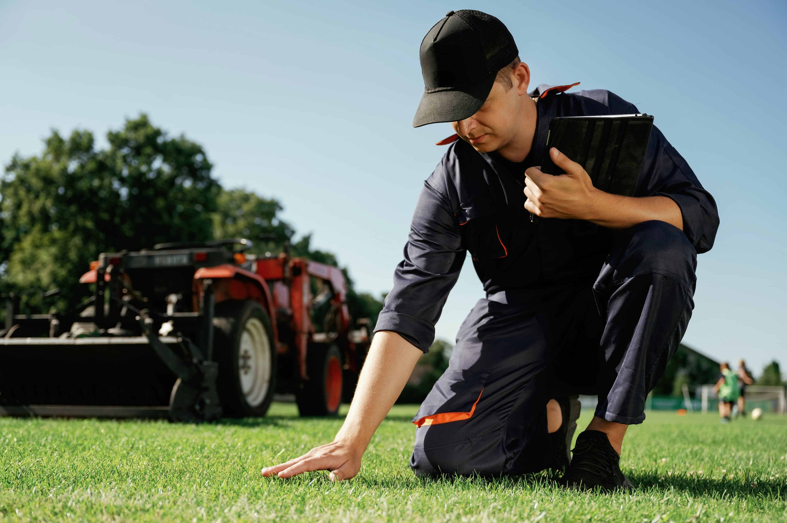

Clarity creates confidence.
Your copy here.

Unknowns are expensive.
Your copy here.


Better data. Better performance.
Your copy here.
Councils and public spaces
Manage assets, monitor change, and make evidence-based decisions across every site.

Turf and professional sports
Precision data keeps playing surfaces performing at their peak, season after season.

Agriculture
Turn every hectare into actionable intelligence and stop guessing what your land needs.
Our four-step process makes complex landscapes simple.
We deploy drones across your site to collect high-resolution imagery, LiDAR, and multispectral data — all in a single flight.
Learn more →Raw data is transformed into georeferenced maps, 3D models, and calibrated indices through our processing pipeline.
Learn more →Our platform surfaces insights automatically — change detection, anomaly flags, and trend analysis delivered to your dashboard.
Learn more →You gain the clarity to make confident, evidence-based decisions — faster responses, reduced costs, better outcomes.
Learn more →A partner in
performance.
We work alongside the best in the business — bringing drone intelligence to organisations that demand precision, reliability, and results.
500+
Sites surveyed across Australia and New Zealand
98%
Client satisfaction rate across all engagements
3x
Faster decision-making compared to traditional methods
We've partnered with tier-one organisations to deliver clarity where it matters most.
"The weekly turf reports from Droneland have become a vital tool for the team at the City of Port Phillip. The data is accurate, timely, and genuinely shapes how we manage open spaces each season."
— Operations Manager, City of Port Phillip